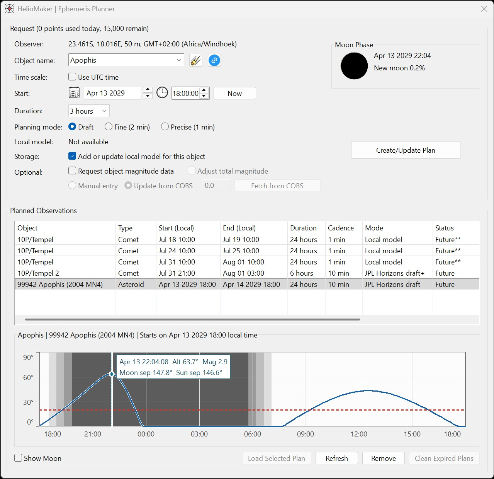
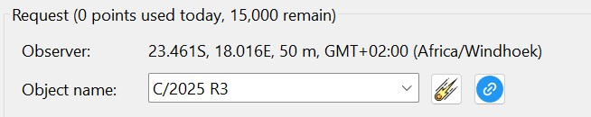

Comet and Asteroid Tracking with Ephemeris Planner and Dynamic Tracking
The Ephemeris Planner creates target-position data for natural solar-system minor bodies, including comets, asteroids, planets and moons.
A generated plan can later be loaded into Dynamic Target Tracking so HelioMaker can slew, center, and track the selected object using custom mount
rates when available, or the fully automated PHD2 comet-tracking fallback when custom mount rates are not available.

Opening the Tool
The planner can be opened in either of these ways:
Open the Tools menu and select Ephemeris Planner, or press Ctrl-E.
The planner is available when HelioMaker's ephemeris module is ready and an observer location can be determined. If PHD2 is connected, HelioMaker checks
that the custom PHD2 version is v2.6.14-solar.3.3 or later. If PHD2 is not connected, the planner can still run by using a custom observer location or
a cached mount site, and HelioMaker will ask the user to confirm that location before continuing. If no observer location is available, connect PHD2 with
a mount that reports its site, or enter a custom location in DTT first.
Object Selection Helpers
The Object name field accepts a typed object name or designation, and also keeps recently used objects for quicker reuse.
The comet button opens the Comet Observation Database (COBS), which can help identify active comets and their designations. The link button opens
a set of useful minor-body resources, including Minor Planet Center and ESA NEO pages for finding asteroid, comet, and minor-planet information.

Request Settings
Observer: Shows the observing location used for the request, including latitude, longitude, elevation, and time-zone offset.
Object name: Select or enter the target object. Examples include comet designations, asteroid names, planets, moons, and known minor-body names.
Use UTC time: Switches the request between local-time entry and UTC-time entry.
Start: Sets the start date and time for the plan. The Now button can use the current time.
Duration: Selects the time window for which ephemeris data should be generated.
Planning mode: Chooses the cadence and precision used for the generated plan. Finer modes use more request points.
Add or update local model for this object: Downloads and stores a local ephemeris model for later reuse when available.
Request object magnitude data: Requests magnitude information when supported by the data source.
Local Object Database
The Add or update local model for this object option is useful when planning for an observing site where internet access may not
be available. When enabled, HelioMaker downloads a local ephemeris model for the selected object and stores it in the local object database. Later,
the planner can update or create plans for that object locally, without needing to contact JPL Horizons for the position data again.
This workflow is useful for offsite preparation: create or update the local model while internet access is available, then use the stored object
model later at the observing location to generate a plan for the actual observing time and site. The main drawback is magnitude data. Object
magnitude information still requires an online JPL Horizons request, so locally generated plans may not include magnitude values unless that data
was requested and stored earlier.
JPL Horizons Requests
Some ephemeris plans require internet access and use the JPL Horizons service. Before sending such a request, HelioMaker shows a confirmation dialog
with the target, local time, UTC time, duration, cadence, sample count, and request-point cost.
The planner displays the remaining request points for the current UTC day. Choose targets and time windows deliberately to respect the fair-use policy
of the JPL Horizons service.
Request points are a daily limit used to avoid accidental overuse of the external JPL Horizons service. A plan consumes points according to the
number of requested samples, and some local-model updates consume a fixed point cost. Shorter time windows and coarser planning modes generally use
fewer points. The remaining point count is shown in the request area so the user can decide whether to create the plan now, shorten the request, or
wait until the next UTC day.
Planned Objects
The Planned Objects table lists generated or available plans. The table includes the object name, object type, local start and end time,
duration, planning mode, status, and observer location. A status such as Ready indicates that the plan can be selected and loaded.
A plan can be loaded into DTT only when the current time is inside the plan's time window and the planned object is above the configured minimum
altitude. This altitude limit is set in Advanced Settings as Minimum altitude for imaging and observations.
Create/Update Plan: Creates a new plan or updates an existing plan for the selected object and time window.
Load Selected Plan: Loads the selected ready plan into Dynamic Target Tracking.
Refresh: Reloads the list and status of available plans.
Remove: Removes the selected plan.
Clean Expired Plans: Removes expired plan data that is no longer useful.
Altitude Graph
The graph shows the planned object's altitude over the selected time window. The optional Show Moon checkbox overlays the Moon so
the user can judge possible interference or observing context. The graph also helps visualize horizon crossing, daylight/twilight/night periods,
and the best time window for observing or capture.
Common Planner Workflows
Prepare a minor-body session: Use the object helpers to find the target designation, choose the observer location and time
window, create the plan, review the altitude graph, then load the ready plan into DTT.
Plan a comet, asteroid, or minor-body capture: Look up the object in COBS or another linked resource, create the plan, and use the
planned object's altitude and optional Moon overlay to choose a practical capture window. Once the plan is loaded into Dynamic Target Tracking,
the target is centered in the camera view, and Dynamic Target Tracking is active, the user can continue with an existing imaging workflow while
PHD2 guides on the star field. HelioMaker updates the object drift rates in real time in the background, with precision based on the selected
Ephemeris Planner cadence, such as 10 minutes, 2 minutes, or 1 minute. For example, NINA, SGP, or another imaging tool can take a series of
exposures while HelioMaker keeps the PHD2 comet/minor-body drift rate updated. In this workflow, HelioMaker does not need to be connected to
SharpCap when PHD2 is using a physical guiding camera and the user prefers another imaging application.
Reuse a cached plan: Select an existing ready plan from Planned Objects and load it into DTT when the plan
still covers the current observing session.
Refresh stale planning data: Create or update a plan when the previous plan expired, was generated for a different observer
location, or does not cover the intended session time.